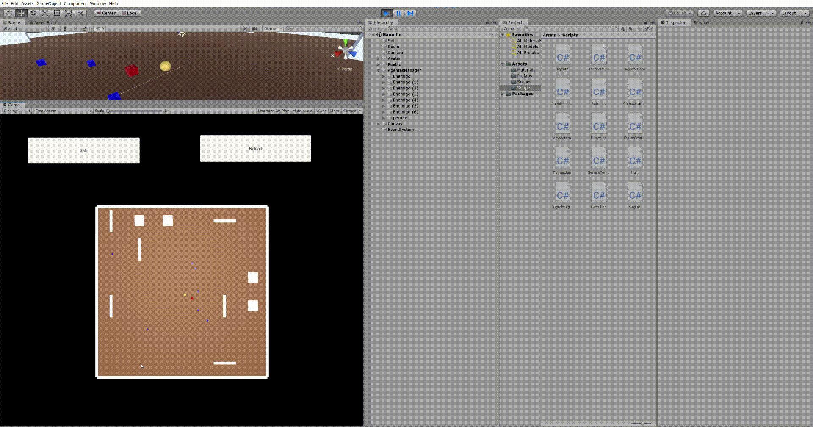
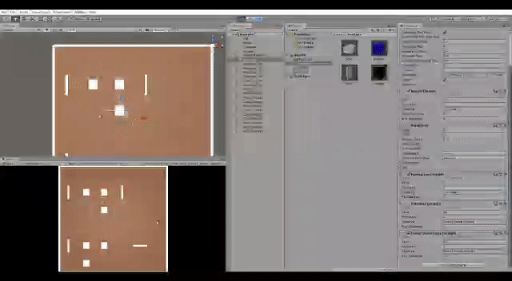

Práctica 1:
El flautista de Hamelín
En este apartado se explica el funcionamiento de la práctica junto con algunas pruebas realizadas a lo largo del desarrollo y los algoritmos usados. Junto con las decisiones tomadas para la implementación de algoritmos.
Memoria técnica del prototipo
Lo que se ha hecho en esta práctica es un prototipo en el que el jugador controla el movimiento del flautista y el resto de personajes (Perro y Ratas) son controlados mediante agentes inteligentes. El perro es nuestro fiel compañero que nos sigue en todo momento y las ratas están merodeando por el pueblo.
Mientras estamos paseando por el pueblo con nuestro perro, tenemos la posibilidad de tocar la flauta, esto hará que las ratas sean hechizadas y nos empiecen a seguir por todo el mapa. Nuestro perro huirá de nosotros ya que se asusta con la presencia de las ratas.
Con este prototipo se ha podido probar algoritmos de movimiento que se siguen usando actualmente en la industria para los movimientos tanto en solitario como en bandada.
Interfaz de Usuario
Al inicio del prototipo un pueblo se generará de manera procedural y
el perro comenzará con una actitud en la cual sigue al jugador
mientras pasea por el pueblo. Las ratas por otra parte estarán
merodeando por el pueblo.
2 botones colocados en la parte superior de la pantalla permiten la
generación de un nuevo pueblo y la salida del juego.
Controles
Para el movimiento del jugador se ha optado por 2 alternativas:
| Acción | Descripción | Botón 1 | Botón 2 |
|---|---|---|---|
| Arriba | Movimiento vertical hacia arriba. | W | Flecha Arriba |
| Abajo | Movimiento vertical hacia abajo. | S | Flecha Abajo |
| Derecha | Movimiento horizontal hacia derecha. | D | Flecha Derecha |
| Izquierda | Movimiento horizontal hacia izquierda. | A | Flecha Izquierda |
| Tocar Flauta | Toca la flauta para llamar a las ratas. | Espacio | - |
Notas de la implementación.
El primer paso que dimos para la implementación de este prototipo fue el cambio del movimiento ya que todo era movido con fuerzas y para el movimiento de un personaje nos parecía mejor usar un movimiento más suave que no fuese incrementando con una aceleración. Además de esto, hemos separado para que sea más específico tanto el comportamiento del Perro como de la Rata para que ambos comportamientos sean hijos de la clase Agente.
En cuanto al Input del usuario, la parte que hemos tenido que añadir es el funcionamiento de la tecla Espacio. Ya que todos los agentes del juegos tienen que hacer alguna acción con la pulsación del Espacio, cada tipo de Agente tiene una redefinición del comportamiento que tiene que realizar cuando ocurre esta acción.
if(Input.GetKeyUp("space")) { foreach (Agente a in agentes) {
a.ToggleFlauta(); } }

Una vez las ratas llegan al jugador, estas para no estar totalmente juntas se colocan ellas solas para formar una formación alrededor del jugador cuando este no se mueve. Para ello, hemos usado 8 Raycast. Cada uno de estos Raycast cubre las 8 direcciones (Separadas 45º una de la otra) y si estos chocan con tanto una rata como con el jugador, se separan una unidad.
for(int i = 0; i < 8; i++)
{
if (Physics.Raycast(transform.position, (Quaternion.AngleAxis(angle, Vector3.up) * transform.forward), out hitInfo, raydistance))
{
if (hitInfo.collider.tag == "rata" || hitInfo.collider.tag == "Player")
{
direccion.lineal += (Quaternion.AngleAxis(angle, Vector3.up) * transform.forward) * -1;
}
}
angle += 45;
}
Una vez se empieza el juego, las ratas tienes un estado de merodeo por el pueblo, esto se ha conseguido eligiendo en cada momento un valor aleatorio en un intervalo y normalizandolo. Para que este cambio sea más pronunciado ese valor es triplicado. Esto crea un efecto paseo pero no como el de un humano sino como el de un animal deshorientado y que no lleva un rumbo fijo.
direccion.lineal = Quaternion.AngleAxis( Random.Range(-desviacion,
desviacion), Vector3.up) * agente.velocidad.normalized*3;
Por último, con los comportamientos de estos agentes interfieren
obstáculos que hay por el mapa. Para evitar estos obstáculos hemos
optado por el uso de 3 Raycast. El primero irá en la dirección en la
que se está moviendo el Agente y en caso de que este rayo atraviese
un obstáculo, lanzamos 2 rayos más.
Estos rayos se lanzan en 15º y -15º con respecto a la dirección del
Agente. Si los 2 rayos impactan en un obstáculo, el Agente girará en
la dirección del rayo que haya impactado con un objeto más lejando.
Con esto logramos hacer que en la gran cantidad de casos, se esquive
el objeto que se tiene más cerca. En caso que el que colisione con
un obstáculo sea solamente un rayo, el Agente girará 90º en la
dirección opuesta a ese rayo.
if (Physics.Raycast(transform.position, (Quaternion.AngleAxis(0, Vector3.up) * agente.velocidad.normalized), out FronthitInfo, rayDistance))
{
// Se comprueba si el RayCast aha colisionado en un objeto con el tag de obstaculos
if (FronthitInfo.collider.tag == "obstaculos")
{
Debug.DrawRay(transform.position, agente.velocidad.normalized * rayDistance, Color.white);
RaycastHit LhitInfo;
RaycastHit RhitInfo;
bool hitL = Physics.Raycast(transform.position, (Quaternion.AngleAxis(15, Vector3.up) * agente.velocidad.normalized), out LhitInfo, rayDistance,8);
bool hitR =Physics.Raycast(transform.position, (Quaternion.AngleAxis(-15, Vector3.up) * agente.velocidad.normalized), out RhitInfo, rayDistance,8);
// Si ambos rayos laterales chocan comprueba cual de los dos se encuentra mas cerca y va en direccion opuesta a el.
if(hitL && hitR){
if(LhitInfo.distance > RhitInfo.distance){
direccion.lineal = (Quaternion.AngleAxis(90, Vector3.up) * agente.velocidad.normalized);
}
else{
direccion.lineal = (Quaternion.AngleAxis(-90, Vector3.up) * agente.velocidad.normalized);
}
}
// Si choca el izq va hacia la der
else if (hitL){
direccion.lineal = (Quaternion.AngleAxis(90, Vector3.up) * agente.velocidad.normalized);
}
// Si choca el der va hacia la izq
else{
direccion.lineal = (Quaternion.AngleAxis(-90, Vector3.up) * agente.velocidad.normalized);
}
}
}
Referencias
- Input.GetKey
- Physics.Raycast para la formación de los agentes y el esquive de objetos al seguir.
- Quaternion.AngleAxis
- MonoBehaviour.StartCoroutine
- Millington, I.: Artificial Intelligence for Games. CRC Press, 3rd Edition (2019)